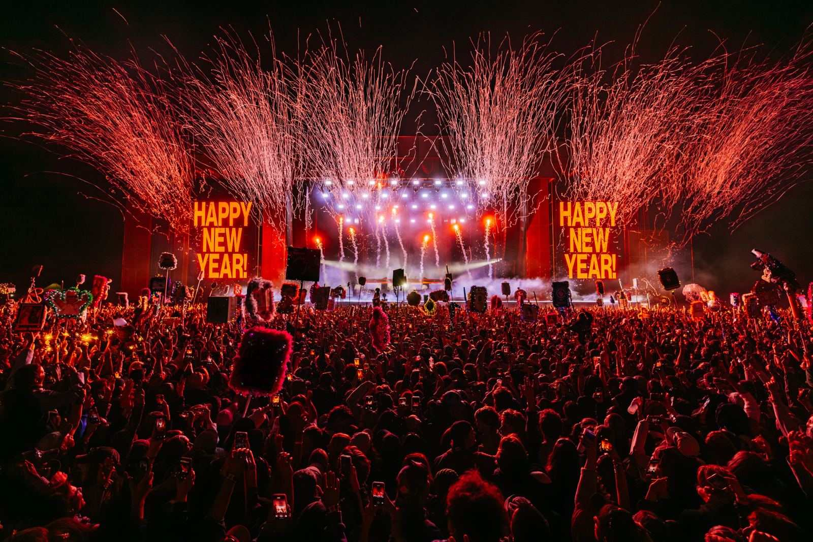

Festivals · Music
Beyond The Valley 2026/27
- Dates
- –
- Venue
- Barunah Plains
- Location
- Hesse, Australia
- Format
- In-person
- Category
- Music
- Industry
- Music
- Organiser
- Untitled Group
- Official website
- https://www.beyondthevalley.com.au/
About
The 2026 edition sold out. Dates are local Australian dates (AEST/AEDT, ACST/ACDT or AWST depending on state).
Topics: camping festival, New Year's Eve, electronic, hip hop.
No organiser attendance figure found on official pages (23 Nov 2026). Ranked by an estimated size tier 'large' (our judgement from format, venue and scale, not an official number).
Sources
- Official — https://www.beyondthevalley.com.au/